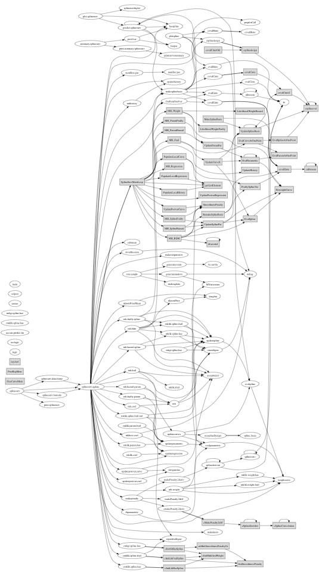

TABLE OF CONTENTS
- 1. /00main
/00main [ Modules ]
NAME
00main --- main fitting routines
FUNCTION
The splinesurv package contains utilities for nonparametric Bayesian analysis of clustered survival data. The baseline hazard function and frailty density are modeled using penalized B-splines. Options include adaptive knot selection and the inclusion of a parametric component.
The most important function is splinesurv.agdata, which does most of the model fitting. After initializing, the method either continues in R (if the option usec=TRUE is set), callling the various mh.* procedures, or calls SplineSurvMainLoop in the C compiled code, which does the same thing, only faster. The R implemented routines are thus primarily for debugging.
Source code modules are organized as follows: initRoutine contains functions used to initialize the algorithm. After initialization, RFitting contains the routines for running estimation entirely within R, and CFitting contains analogous functions written in C. These two Fitting modules work independently of one another, and give the same result, although the CFitting routines of course run much more quickly. The RFitting routines thus serve primarily as a sanity check, since they are easier to understand. Each of the fitting modules has a number of submodules, see their descriptions for detail. The routines use data structures described in 01structures.
The S3Methods module contains user-callable functions, many of which are visible when the package is installed. The simSurvival module contains tools to generate simulated survival data, used in conducting simulation studies.
The call graph below is rather small and unhelpful. See a larger but equally unhelpful pdf version here: callgraph.pdf

CONTENTS
splinesurv.agdata --- main estimation function SplineSurvMainLoop --- main loop in C
USAGE
For usage instructions, see the R package documentation
AUTHOR
Emmanuel Sharef